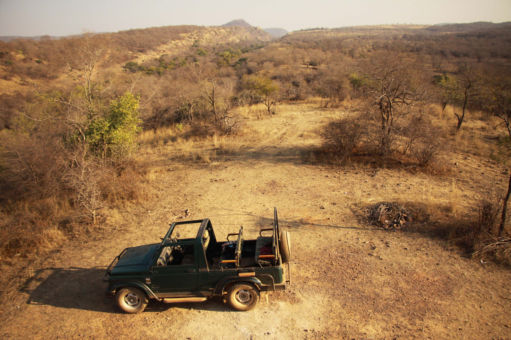
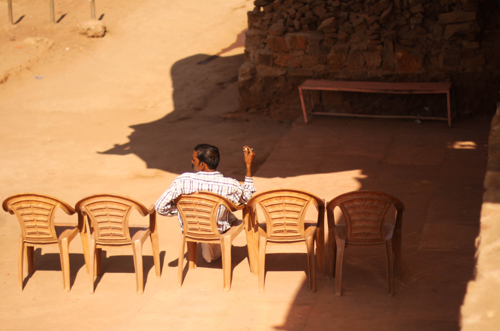

PHOTOGRAPHY
SAFARI TO SOMEWHERE / 2015
The tranquility of nature is greatly underestimated by us beings who increasingly seek for more in pursuit of satisfying our shallow wants. My trip to Ranthambore, Rajasthan grew out of a desire to get away from the chaos of living in the city and interacting with its mechanical people. Having grown up in Singapore, the raw beauty of smalltown Indian cities encompasses me in a way that is comforting. It offers a contrast to the perfectly curated world I call home, and in doing so it nurtures the realization that just the act of being present and living in the now is a sort of slow magic.
Published : Indian Expats 2015